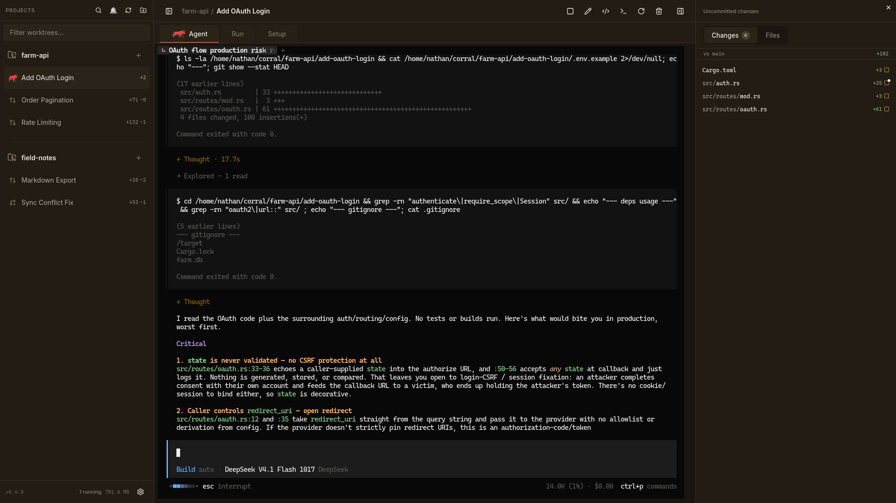
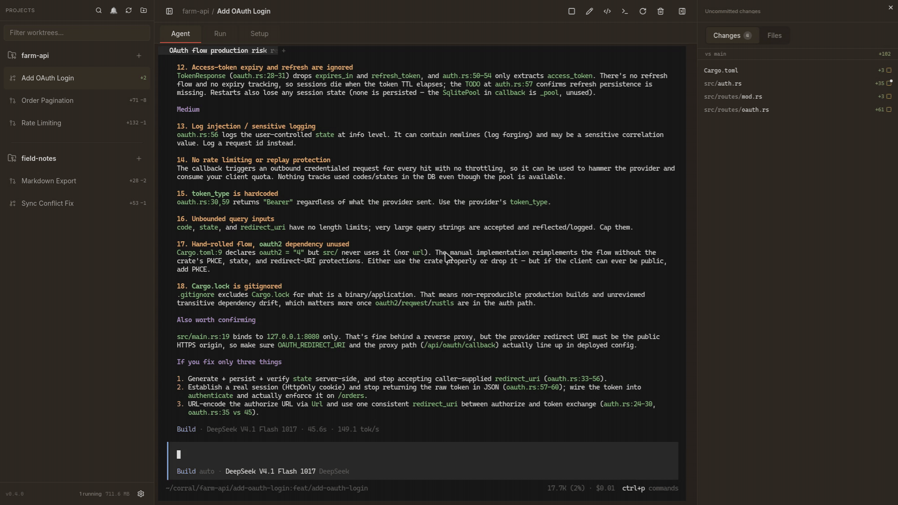

Isolated worktrees
Every agent gets its own branch and directory under
~/corral. Your main checkout stays untouched.
Linux desktop app
Every agent gets its own git worktree, branch, and PTY. Corral keeps them in line while you keep moving.

Works with
What it does
Every agent gets its own branch and directory under
~/corral. Your main checkout stays untouched.
Claude Code, OpenCode, and Pi run as real CLIs in a terminal, with scrollback and session resume.
The right pane lists every file the branch touched. Click one to read its diff without leaving the app.
Ctrl+K jumps anywhere. Ctrl+1-9 switches worktrees. Ctrl+Tab cycles tabs.
One-shot setup commands and a long-lived Run panel per worktree. The dev server stays out of the agent's pen.
Fast-forward merge, push, open a PR with gh, and
watch CI checks without switching windows.
Demo
Jump between worktrees, then review the diff. No tab hunting, no terminal juggling.

How it works
Point Corral at any local git repo. It handles the worktrees from there.
Pick a harness and a worktree. The agent comes up in its own terminal.
Read the diff, merge the branch, or open a PR. Keep the herd moving.
Install
Download the latest release for Linux, or build from source and install the CLI.
$ corral new farm-api oauth-login --no-agent
→ ~/corral/farm-api/oauth-login
$ corral list
farm-api/oauth-login [feat/oauth-login]
↑0 ↓0 ~1 +0 ?0
field-notes/export [feat/export]
↑2 ↓0 clean